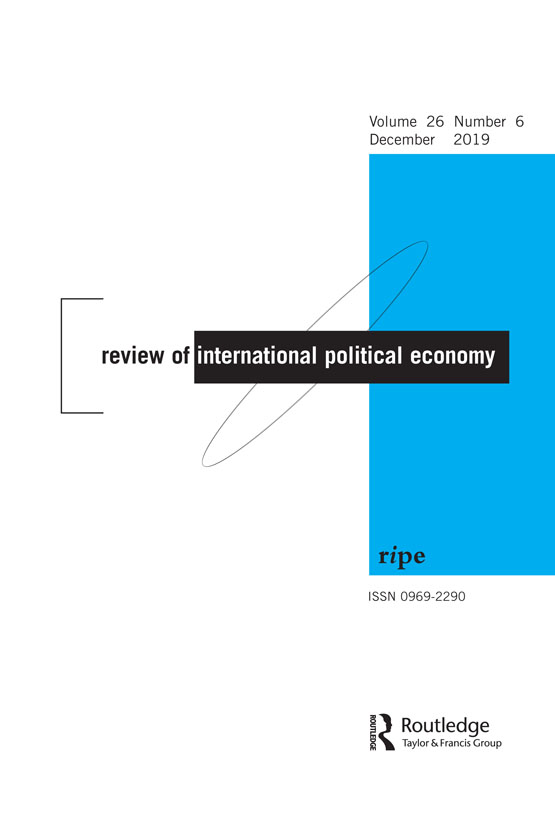
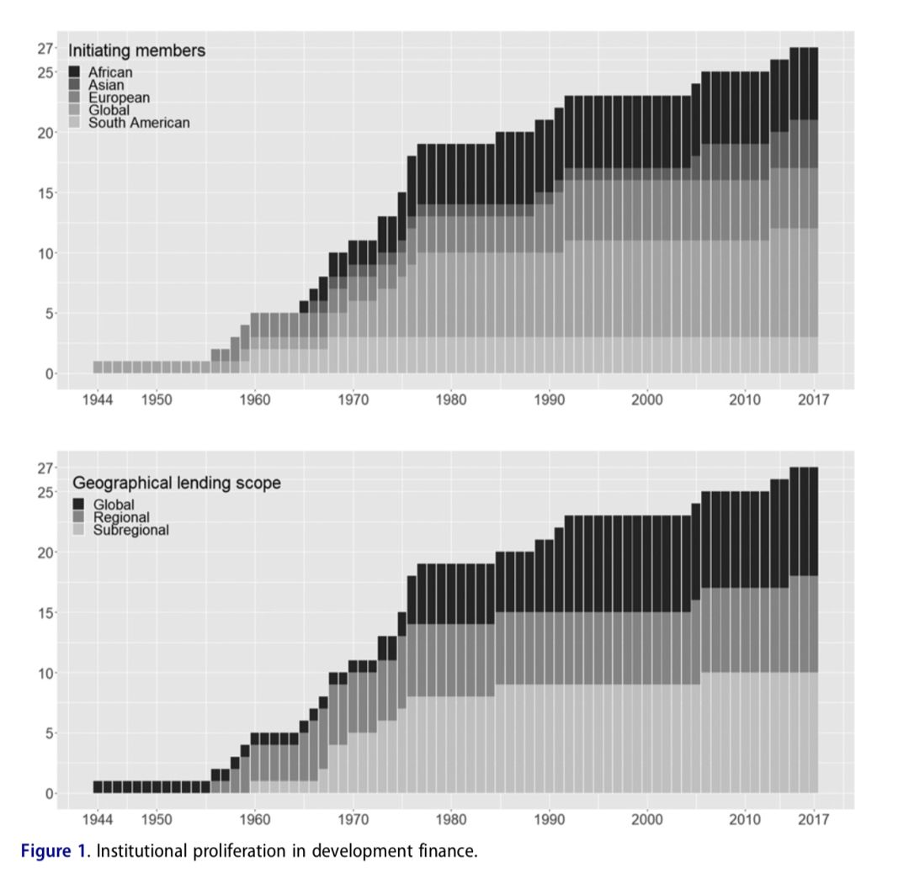

收录于合集

作品简介
【作者】 Eugenia C. Heldt,慕尼黑工业大学管理学院巴伐利亚公共政策学院教授，慕尼黑工业大学管理学院创始院长，此外他还担任欧洲和全球治理主席；Henning Schmidtke，慕尼黑工业大学管理学院巴伐利亚公共政策学院高级研究员。
【 编译】 雒景瑜（国政学人编译员，外交学院国际关系研究所）
【校对】 李博轩
【审核 】 王国欣
** 【排版 】** 李佳霖 ****
** 【来源】**
Eugénia C. Heldt & Henning Schmidtke (2019).Explaining coherence in international regime complexes: How the World Bank shapes the field of multilateral development finance. Review of International Political Economy , 26(6) , 1160-1186.
期刊介绍

Review of International Political Economy，国际政治经济学评论，创立于1994年，是一本以国际政治经济学为主要内容的同行学术评审杂志。该刊2018年的影响因子为2.800。
解释国际机制复合体的聚合性：世界银行怎样塑造全球多边开发性金融领域？
Explaining coherence in international regime complexes: How the World Bank shapes the field of multilateral development finance
内容提要
在过去几十年，多边开发性金融的格局已经发生了急剧的变化。在布雷顿森林体系中，代表们将世界银行视为动员金融力量、为国家发展战略提供支持的重要组织。目前，多边开发性金融领域已经拥有至少27家多边开发银行，包括中国领导的亚洲基础设施投资银行和金砖国家新开发银行。本文认为，尽管存在机制大量增加的现象，但在发展金融领域很大程度上是有聚合性的，布雷顿森林体系创设的核心治理规则仍在塑造着新型机制复合体。作者用历史制度主义的方法来解释为什么新创立的机制倾向于模仿既有机制。作者认为在全球经济治理领域，一个合作的机制复合体具有多边主义、合法性、集中度和市场嵌入性的特征，国家建立新机制不仅是为了弥补现有机制存在的不足，也有加强权力和信誉的考虑。其次，作者分析了三种因果路径——路径依赖（path- dependence）、和谐安排（orchestration）、独立学习（independent learning），这三种路径促进了聚合性机制复合体（a coherent regime complex）的形成。研究结果显示，处于核心的国际组织能够利用它们的地位阻止机制不聚合现象的发生。
文章导读
一、 （非）聚合机制复合体的演化 ****
在哪种情形下，机制复合体是有聚合性的？首先，聚合性（coherence）是一个机制的体系因素，它衡量的是体系内不同机制之间的互补程度。如果一个机制复合体内不同机制的治理特点是一致的，那么复合体内就会形成合作，反之则会引起冲突。在全球经济治理领域，一个合作的机制复合体具有多边主义、合法性、集中度和市场嵌入性的特征；其次，从历史制度主义的视角来看，如果将目光聚焦于机制复合体的历史发展，就会发现新机制的设计行为都被现存的机制所塑造。因此， 机制复合体的聚合性脱离机制环境的语境就不能被充分理解 。作者认为机制复合体的聚合性不仅取决于新机制的创立和设计，还取决于现存机制对新机制的反应。历史制度主义者认为时间因素决定了全球治理中行为体的可选项，包括行为体认为哪些举措是合法的，在特定情形下最有可能采取哪种方式。
那么为什么一个国家决定用一个新的机制去补充核心机制呢？ 理性设计理论认为，创设一个新 机制 而非利用或者改变现存 机制 的制度性选择是一个国家对现存机制大量缺陷的反应。 按照这个逻辑，新机制的创设反映的是一种对现存机制执行和问题解决能力的不满(Morse & Keohane, 2014; Urpelainen & Van de Graaf, 2015)。因此国家有动力寻找新的替代选择，而不是复制以前的缺陷。
然而，关于崛起国和制度选择的现有研究显示， 对 机制 执行力的不满不是国家创设新 机制 **的唯一原因（ Zangl, Heußner, Kruck, & Lanzendorfer, **2016 ) 。 相较之下，国家更希望通过创立新 机制 ，在特定领域争取影响力，并以他们偏好的方式获得合作利益 (Stone,2008) ，在其他国际机制内获得影响力 (Henning,2019) ，提升国家的地位和声誉（ Paul, Welch Larson, & Wohlforth, 2014 ) ，并克服核心 机制 内存在的僵局 (Hale & Held, 2017)。
按照这一逻辑，现存机制就会在新机制的设计和行为中扮演非常不同的角色。当国家试图提升自己的影响力和地位时，既有核心机制就会通过一系列的规则和行动维护它在过去拥有的利益，限制国家有效选择的领域。
有三种机制使得新机制选择的模式与机制复合体保持一致。第一，路径依赖会导致新机制的设计与原有核心机制相似(Fioretos, 2011) ，因为实力强大的行为体已经适应了核心机制，他们会促成兼容性机制的出现。另外，核心机制在该领域具有权威地位，国家企图通过设立新机制得到额外收益，新机制就要通过加强相似和聚合来减小其不确定性。
第二，因为国际机制的设计和运行需要专家，创立新机制就需要原机制内的国际官僚加入(Johnson & Urpelainen, 2014) 。这些国际官僚被原机制的工作特征所影响，这会使他们在新机制的工作中采用与原机制相同的工作模式，从而增强新旧机制之间的聚合性(Barnett & Finnemore, 2004; Weaver & Nelson, 2016) 。另外，在新机制的创设过程中，原核心机制的建议会被参考和采纳(Alter & Meunier, 2009, p. 16) 。现存核心机制的先动优势带来的信息优势，会使核心机制对新来者形成和谐的安排(Abbott et al., 2015, p. 7) 。
第三，就算核心机制与新机制之间没有直接接触，先动效应（first mover effects）也会带来聚合性。因为原核心机制已经在如何实现治理目标方面得到了专家的广泛认可，在新机制工作的国际官僚会倾向于利用这些资源，向核心机制学习(Gehring & Oberthur, 2009, p. 132) 。
随着时间的推移，专业知识和声誉机制的力量会因为反馈和学习效应逐渐积累。随着越来越多的参与者适应该体系，以及国际官僚对现有体系的直接支持以及新兴机制的学习模仿，新的设计和行为越来越不可能实质性地脱离现存机制。 总的来说，这种路径依赖式的发展会使机制复合体变得和谐。 尽管不同机制的差异依旧会存在，机制会设置不同的优先次序，并且仍然可能出现竞争，但是他们的治理特征是兼容的。
二、 多边开发性金融的遗产与创新
多边开发性金融的聚合性表现在四个方面：第一，多边主义（multilateralism）、合法性（legalization）、集中度（focality）和市场嵌入性（market embeddedness）整合了世界银行为中心的机制设计，世界银行将这些原则运用到过去的制度形成过程中；第二，世界银行在过去一段时间实现了治理特征的转变；第三，世界银行通过特定的方式，向新兴多边开发银行传播了它的治理特征；第四，亚洲基础设施投资银行和金砖国家新开发银行是非西方国家创立的组织，它们的创设也表现出了与既有机制的聚合性。
多边主义是国际开发性金融机制的核心特征。 约翰 ·鲁杰认为国际机制具有的鲜明特征不是因为机制内多个国家政策的协调，而是这些国家间的协调是基于普遍性的原则，这些原则是没有考虑特定的利益和战略要求的。最初，世界银行被视为一个由成员国家控制的政府间组织，为私人贷款提供保障。然而不久之后，最初的制度设计就被改进，原因之一是私人投资者和世界银行的管理者都偏好于在有保障下的直接投资。其次是苏联和其盟友不加入布雷顿森林体系，体系的力量被削弱。
合法性是第二个特征。合法性描述的是由义务、准确度和代表制构成的国际机制。布雷顿森林体系内建立的机制超越了特设的非正式发展筹资，建立了一个具有法律授权的正式组织和一个独立的官僚机制来执行其规则。如果这些由正式的国际机制实施的国际贷款规则和正式的贷款协议不再，转而采用非正式的机制设计、做法和程序，那么这个制度复合体就会变得不连贯。
集中度定义了国际组织在国际政策空间中作为单一且无可争议的政府领导者的程度。联合国各专门机制本可能与世界银行的制度安排形成冲突，引发这一领域的政策不连贯。但是世界银行管理层利用其财务独立性和日益增长的专业知识与联合国谈判达成一项全面合作协议，该协议宣布世界银行独立于联合国的地位。
最后一个特征是市场嵌入性。它描述了这样一种观点，即国际机制定义了一套规则，但也给了政府干预和缓冲私人市场周期的空间(Helleiner, 2019; Ruggie,1982) 。 就多边开发性金融而言，这意味着各国既有财政资源，又有执行经济发展战略的政治回旋余地。 这些战略不一定要遵循纯粹凯恩斯主义的经济模式。但是，他们应该接受国家在经济发展中的作用。 纯粹关注市场智慧的新自由主义方法超出了嵌入性的概念。
世界银行十几年来进行了一系列开发性金融领域的机制改革。首先，世界银行在全球范围内参与了各种各样的开发项目，并且开始接纳越来越多的参与者；其次，世界银行扩大了其研究活动，发布了包括《世界发展报告》和《营商环境报告》在内的有影响力的出版物；第三，世界银行的培训活动及其与发展实践者的持续互动，赋予了世界银行一种“教育”功能，通过这种功能，它可以制定议程，并塑造该领域许多参与者的想法。

图1显示了世界银行从创立至今机制复合体的增长（Pratt，2018a）。上图显示了形成新多边开发银行的国家联盟的地理范围。作者将联盟定义为来自两个或两个以上大陆的国家集团。下图根据地理放贷范围对多边开发银行进行了分类。
三、 亚投行和新开发银行终结了机制聚合性吗？ ****
首先，亚投行（AIIB）和新开发银行（NDB）的创始文件表明，它们被设计为与现有的多边开发银行合作（Asian Infrastructure Investment Bank, 2014, p. 1–2; New Development Bank, 2014, p. 2–3 ）。这种合作早在这两个组织的设计过程中就开始了。
其次，世行的直接投入与亚投行以及新开发银行学习世行经验的努力是平行的（Lichtenstein，2018），这些学习努力也反映在两个组织的管理中。
第三，在形成期，亚投行和新开发银行都与世行以及其他已建立的多边开发银行之间进行了直接合作与协调，都与世界银行和其他已建立的多边开发银行签署了谅解备忘录（Shelepov，2017）。
多边开发性金融的机制复合体，一个显著特点是债权国和债务国都能接受的多边主义，并相对独立于成员国。 总的来说尽管成员国规则略有排他性，但亚投行和 新 开发银行坚持多边主义的治理特征。 尤其是亚投行成员国的迅速增长，包括44个地区和26个非地区成员国，表明中国和其他金砖国家并不打算建立一个排他性的多边开发性金融体系。
关于合法化， 作者 认为 亚投行和新开发银行 都有正式的授权、治理结构和官僚 机构 。 它们法律条文的结构和内容与世行类似，贷款规则和惯例被编入附则、议事规则和类似的正式文件中。
关于市场嵌入。多边开发性金融的方法在两个重要方面有所扩大。首先，财政支持不再仅仅强调基础设施项目，而是包括社会发展、环境目标和善政。第二，通过直接贷款向政府提供资金的同时，还有、包括担保和与私人行动者共同提供资金在内的其他手段。 尽管 亚投行和新开发银行 这两个组织都公开强调 用 资本 运作基础 设施项目，但它们都有一个支持国家和非国家借款人的多部门贷款组合。 ****同样符合世行对市场嵌入性特征的应用，亚投行和新开发银行的这些贷款并非无条件的。这两个组织都制定了环境和社会保障措施，要求债务人在实施资助项目时遵守这些措施。
总的来说，新兴的开发银行似乎正在走一条自布雷顿森林体系以来西方国家追求的道路（Kahler，2016）。 与 新兴开发银行 创立者的声明相反，当前的制度设计和行为并没有建立一种新型的银行并对布雷顿森林体系构成挑战。 相反，它们在很大程度上模仿了 世界银行 **的治理特征（ Acharya，2017）。**不过，只有时间能告诉我们，目前特征相似是否真的会转化为亚投行和新开发银行的功能相似。
四、 结 论 ****
首先，体制创新和扩散并没有从根本上破坏多边开发性金融体系的一致性。即使是在中国及其金砖国家联盟伙伴领导下创建的亚投行和新开发银行，也坚持布雷顿森林体系的治理特征。
其次，制度复合体的聚合性被制度的历史发展逻辑很好地进行了解释。当布雷顿森林体系的代表们决定设计一个核心的多边开发银行时，他们给了世界银行重要的先发优势，这使得该组织能够将其治理特性推广到新创建的多边开发银行。
最后，备受讨论的大国崛起对自由国际秩序的挑战可能被夸大了。 亚投行和新开发银行的倡议、正式规则和政策表明，新兴大国并不寻求以一个基于根本不同治理特征的体系以取代目前的全球治理机构体系。 ****尽管这种做法可能会给金砖国家更多的权力和影响力，但这似乎不太可能破坏自由国际秩序的基础。
_ ** _ ** _ ** _ 本文由国政学人独家编译推荐，文章观点不代表本平台观点，转载请联系授权。**__
扫下方二维码查看往期精彩
【新刊速递】第01期 | Review of International Studies Vol.45, No.4, 2019
【新刊速递】第02期 | International Relations Vol.33, No.3, 2019
【新刊速递】第03期 | International Organization Vol.73, No.3, 2019
【新刊速递】第04期 | World Politics, Vol.71, No.4, 2019
【新刊速递】第05期 | European Journal of International Relations
【新刊速递】第06期 | Security Studies, Vol.28, No.4, 2019
【新刊速递】第07期 | International Secur.ity, Vol 44, No. 2, 2019 | 国政学人
【新刊速递】第8期 | Cambridge Review of International Affairs,Vol.32,No.4
【新刊速递】第09期| International Relations of Asia-Pacific Vol.19,No.3
【新刊速递】第10期 | International Studies Review, Volume.21, No.3, 2019
【新刊速递】第11期|Cooperation and Conflict, Vol. 54, No. 4, 2019
分类导览 1
分类导览 2

点“在看”给我一朵小黄花